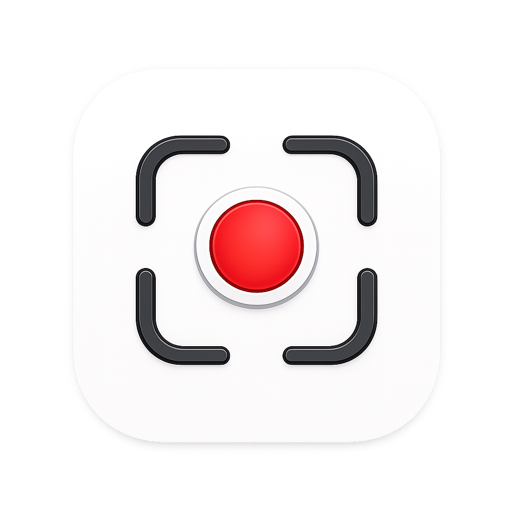
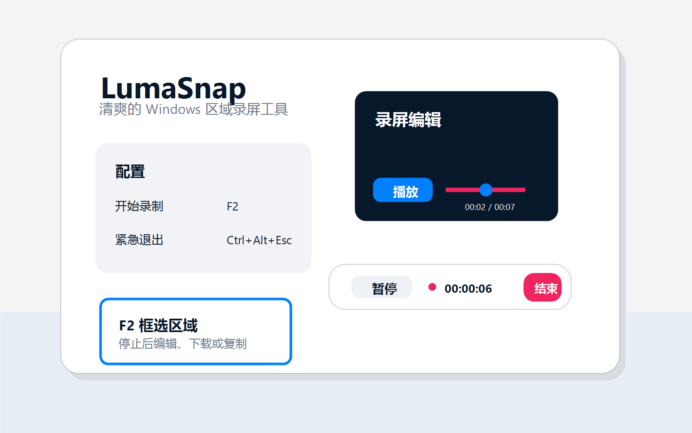

框选录制
按 F2 进入框选，拖拽边缘和角点调整录制区域。框选时按 Esc 或右键可以取消。

LumaSnap
Windows region screen recorder
快速、清爽的 Windows 区域录屏工具。框选区域，开始录制，停止后剪裁、下载或复制。
当前版本 v0.1.0：仅支持屏幕视频，暂不支持音频。
LumaSnap 专注于日常演示、问题反馈、产品说明和快速素材捕捉。它不会自动上传录屏，也不会在你没有点击下载时写入永久视频文件。
Features
按 F2 进入框选，拖拽边缘和角点调整录制区域。框选时按 Esc 或右键可以取消。
悬浮控制条提供暂停、继续和结束录制，录制中边框会从蓝色变为红色。
停止后进入录屏编辑界面，支持播放、重新播放、红色剪裁滑块和蓝色进度滑块。
下载和复制都会遵循剪裁范围。没有点击下载时，不会自动写入永久录屏文件。
Privacy
当前版本不包含账号、云同步、遥测、广告或上传逻辑。录制、编辑、下载和复制都在你的 Windows 设备本地完成。
查看隐私说明Status
FAQ
LumaSnap 默认常驻系统托盘。启动后可以在托盘右键选择配置，或按 F2 开始框选录制。
当前早期版本还没有代码签名。后续正式发布前会评估代码签名证书和安装器。
不会。停止录制后只生成临时预览文件，只有点击下载时才会写入你选择的位置。
v0.1.0 暂不支持音频。音频录制会作为后续版本规划。